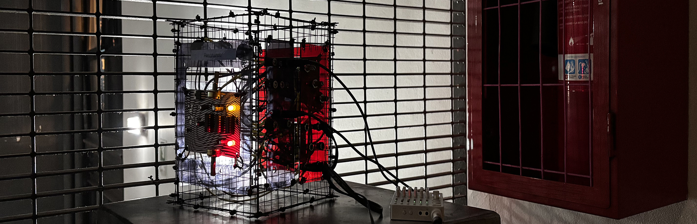
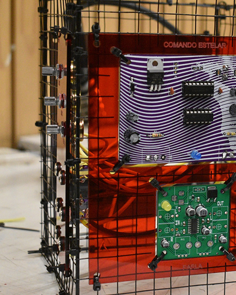
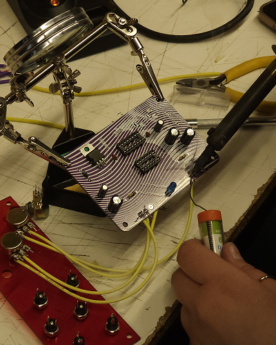
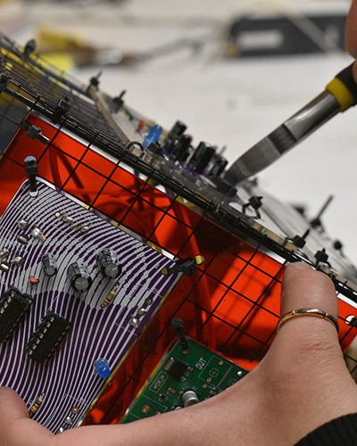
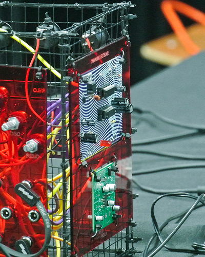

01 . Sintetizador modular
Vitrina Sónica es un sintetizador modular construido a partir de la integración colaborativa de circuitos independientes desarrollados en taller, donde nuestro equipo diseñó y fabricó el módulo oscilador base. El proyecto transforma el instrumento en una vitrina expositiva: en lugar de ocultar la electrónica, deja visibles las placas PCB, el cableado y la circulación de señales para revelar la relación directa entre circuito, sonido y materialidad.
Equipo: Carla Núñez, Antonia Loch, Vanessa García, Narely Riquelme, Ariel Orozco.



